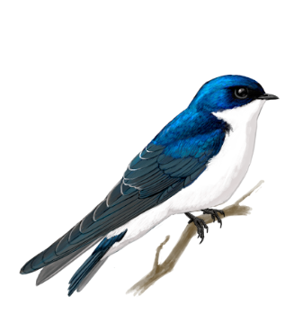
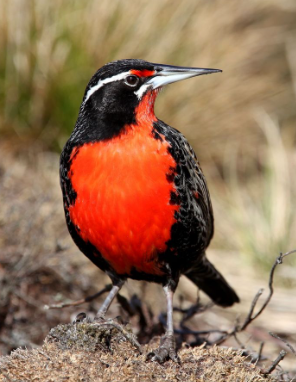

Golondrina
En Chile es regular verla durante todo el año entre las regiones de Atacama y Los Ríos. Se caracteriza por su plumaje azul metálico, alas grises y vientre y rabadilla de color blanco. Es un eficiente cazador de insectos voladores.
Loica
Se distribuye en Chile, desde Antofagasta hasta Cabo de Hornos. El macho adulto se caracteriza por su plumaje parduzco oscuro, pecho de vistoso color rojo, ceja blanquecina y pico largo y puntiagudo. La hembra se diferencia por presentar colores más pálidos en su plumaje. Su dieta comprende principalmente insectos, semillas y pequeños frutos.